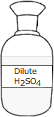
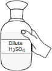
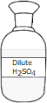
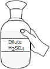
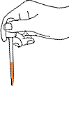
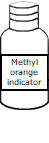
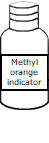
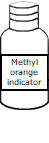

Determination of Alkalinity in water
Objective:
To determine acid neutalizing capacity of given water sample.
Apparatus used:
Pipette, Conical flask, Burette, Beaker, Dropper etc.
Solutions used Dilute Sulphuric acid, Water sample, Tap water, Sodium carbonate (Na2CO3) solution, Methyl orange and Phenolphthalein as indicator. Description Alkalinity of water is a measure of the capability of water to absorb H+ ions without significant change of pH. Alkalinity test measures the level of bicarbonates, carbonates, and hydroxides in water.


Standardisation of Sulphuric Acid
Fill the burette with dilute Sulphuric Acid upto zero mark.


 



Add 10ml 0.02N Sodium Carbonate (Na2CO3) solution to a conical flask through graduated pipette.


Squeeze the pipette bulb and dip pipette into the Na2CO3 solution
Press the up arrow on the bulb to take the liquid up into the pipette
Add 2 drops of Methyl Orange indicator to the conical flask.
  


Titrate the dilute Sulphuric Acid till the colour changes to wine red.


Open the knob to start the liquid running into the conical flask
Close the knob when the colour of solution in conical flask changes to pale yellow
Initial burette reading = 0 ml
Final burette reading = _______ ml
Observations:
| Volume of Sodium Carbonate (Na2Co3) solution (ml) | Normality of Sodium Carbonate (Na2Co3) solution (N) | Burette Reading (ml) | Volume of Sulphuric Acid (H2SO4)(ml) (Final Value - Initial Value) | |
| Initial Value | Final Value | |||
| 10 | 0.02 | |||

✔
✘
Normality of Sulphuric Acid =
Sample Titration
Fill the burette with dilute Sulphuric Acid (H2SO4) solution upto zero mark.
Add 100ml water sample to a conical flask through graduated pipette.

Squeeze the pipette bulb and dip pipette into the water sample
Press the up arrow on the bulb to take the liquid up into the pipette
Add few drops of Phenolphthalein Indicator to the conical flask. Then the sample turns pink if the pH is above 8.3.


Since the given Water sample has pH above 8.3, the colour of the solution turned to pink. Continue the titration against dilute Sulphuric Acid.
Titrate the dilute Sulphuric Acid till the sample colour changes to colourless (at pH 8.3).
Open the knob to start the liquid running into the conical flask
Close the knob when the colour of solution in conical flask changes to pale yellow
Initial burette reading = 0 ml
Initial burette reading = _______ml
Observations:
| Volume of water sample taken (ml) | Burette Reading (ml) | Volume of Sulphuric Acid (ml)(Final Value-Initial Value) | Normality of Sulphuric Acid (N) | |
| Initial Value | Final Value | |||
| 100 | ||||
✔
✘
P as alkalinity of CaCO3 =
Add few drops of Methyl Orange to the same sample after colour changes from pink to colourless on titration.
Continue the titration till the sample colour changes to wine red when the pH value reaches 4.5 .
Open the knob to start the liquid running into the conical flask
Close the knob when the colour of solution in conical flask changes to pale yellow
Final burette reading = _______ ml
Observations:
| Volume of water sample taken (ml) | Burette Reading (ml) | Volume of Sulphuric Acid (ml)(Final Value-Initial Value) | Normality of Sulphuric Acid (N) | |
| Initial Value | Final Value | |||
| 100 | ||||
✔
✘
T as alkalinity of CaCO3 =
Tap Water Titration
Fill the burette with dilute Sulphuric Acid (H2SO4) solution upto zero mark.
Add 100ml tap water to a conical flask through graduated pipette.
Squeeze the pipette bulb and dip pipette into the water sample
Press the up arrow on the bulb to take the liquid up into the pipette
Add few drops of Phenolphthalein indicator to the conical flask.
Since tap water pH is below 8.3 colour
of the solution remains same (colourless). Directly add Methyl Orange to the conical flask.
Add few drops of Methyl Orange to the same sample.
Continue the titration till the sample colour changes to wine red when the pH value reaches 4.5 .
Open the knob to start the liquid running into the conical flask
Close the knob when the colour of solution in conical flask changes to pale yellow
Initial burette reading = 0 ml
Final burette reading = _______ ml
Observations:
| Volume of water sample taken (ml) | Burette Reading (ml) | Volume of Sulphuric Acid (ml)(Final Value-Initial Value) | Normality of Sulphuric Acid (N) | |
| Initial Value | Final Value | |||
| 100 | ||||
P as alkalinity of CaCO3 = 0
✔
✘
T as alkalinity of CaCO3 =
Inference:
What is the acceptable range of alkalinity in drinking water?
less than 200mg/l greater than 200mg/l No prescribed limitsTitration =